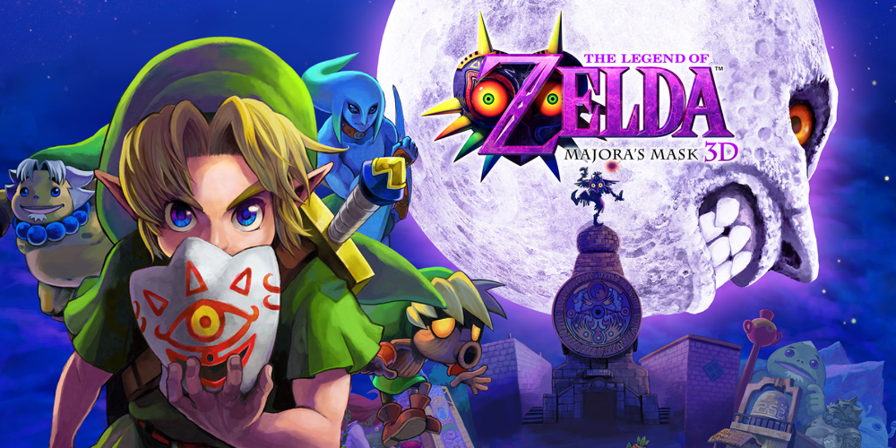

Minha Experiência
Ainda não comecei Majora's Mask. Tenho medo de começar — um medo difícil de explicar porque não vem de uma experiência ruim com o jogo, vem de tudo que existe em torno dele antes mesmo de você apertar start. A atmosfera, as creepypastas, a reputação. A lua descendo. O rosto. O tempo que não para de correr.
Existe uma frase que fica na minha cabeça mesmo sem ter jogado: "Você encontrou um terrível destino, não foi?" — a do vendedor das máscaras, com aquela risada, com o som da Oath to Order dos gigantes tocando no fundo. Eu conheço esse jogo pela sua mitologia, pelos seus fantasmas, pelas histórias que as pessoas contam sobre ele. Ainda não o conheço por dentro.
Um Vídeo Que Ficou
Tem um vídeo que já ficou antes mesmo de eu encostar no jogo — um comic dub contando essa história pela perspectiva de um guarda da Cidade do Relógio. Ele fala de um garoto novo que chega carregando um monte de máscaras, que um dia fala com ele usando uma delas. O guarda vê o garoto trocar de identidade o tempo todo e acha que ele deve simplesmente gostar de brincar com aquilo — até reparar que, por baixo da calma, tem alguma coisa que parece cansaço antigo, como se ele já tivesse passado por tudo isso antes.
Não sei o que essas máscaras custam de verdade lá dentro. Mas foi a primeira vez que Majora's Mask me pareceu triste antes de me parecer assustador — e isso veio de fora, pelos olhos de alguém que também não entendia direito o que estava vendo.
Comic original de @marmastry — nesta versão, dublado em "Majora's Mask I: De um Guarda da Cidade do Relógio"Momentos que Ficaram
- "Você encontrou um terrível destino, não foi?" — a frase do vendedor das máscaras
- A risada do vendedor das máscaras e o som da Oath to Order dos gigantes juntos
- [ o resto ainda está por vir ]
Dificuldades
Começar. A dificuldade ainda é essa — dar o primeiro passo num jogo que já existe na minha cabeça com uma presença pesada, moldada por anos de creepypastas e pela atmosfera que vaza para fora dele mesmo antes de jogar.
Tenho medo de um jogo que ainda não joguei. Isso já diz tudo sobre o que ele é.
Ainda não — mas já me assombra